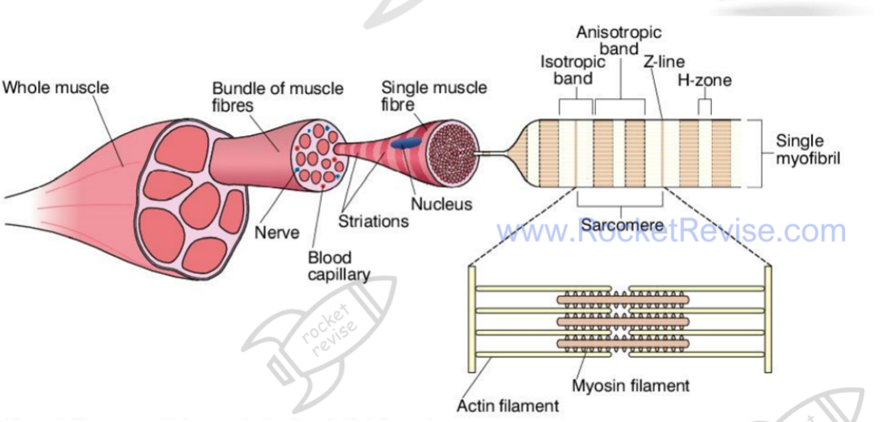
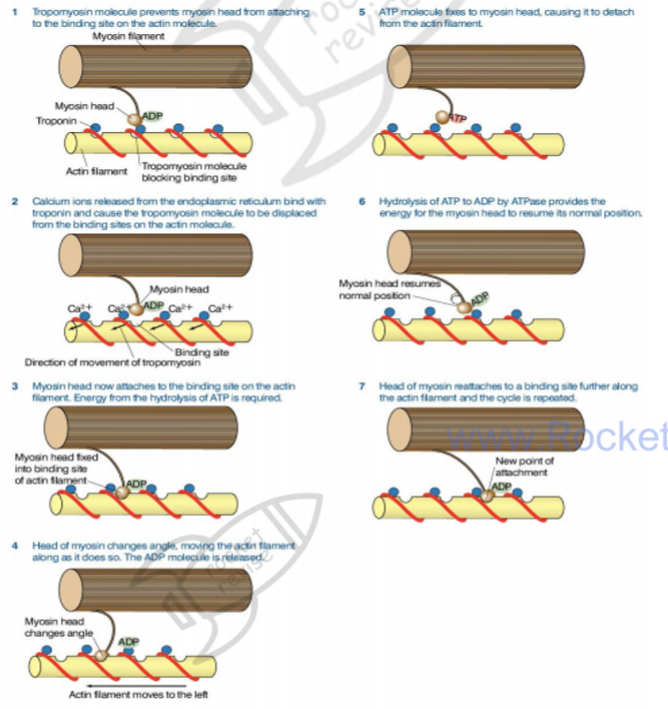
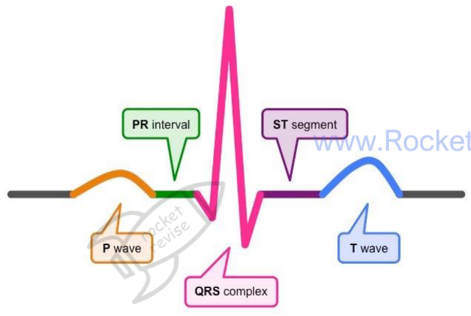
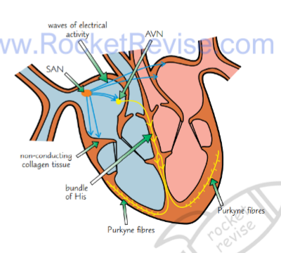

Muscles and the Heart
Movement depends on muscles pulling on bones through tendons, and muscle contraction depends on actin and myosin sliding past each other. The heart is a muscle too, but it contracts on its own rhythm. This page covers the skeleton and muscle structure, the sliding filament mechanism, fibre types, and how the heart's electrical activity produces the cardiac cycle and an ECG.
Bones, cartilage, ligaments and tendons
Each skeletal tissue is built for a particular job. Bone is living tissue. Its osteocytes sit in a hard matrix containing tiny crystals of calcium phosphate and collagen fibres. The calcium phosphate gives compressive strength, while the collagen gives some flexibility so the bone does not snap. Blood vessels running through the bone supply oxygen and nutrients.
Cartilage is a flexible connective tissue made by chondrocytes. It contains no calcium, which is why it is softer than bone. It covers the ends of bones where they meet, reducing friction and absorbing shock.
Ligaments and tendons are both collagen, but they are arranged differently for different jobs. Ligaments join bone to bone. Their fibres are laid in layers, which gives strength with some elasticity, so they hold the joint in place while still allowing movement. Tendons join muscle to bone. Their collagen runs in tight parallel bundles and they are much less stretchy than ligaments. This matters: if a tendon stretched, the muscle's contraction would be used up stretching the tendon instead of moving the bone.
The synovial joint
In a synovial joint, the bone ends are capped with smooth cartilage. Ligaments hold the bones together, and a collagen capsule surrounds the joint. The capsule limits how far the joint can move and stops the bones dislocating. Its inner lining, the synovial membrane, secretes synovial fluid into the joint cavity. The fluid is made from blood plasma, and it lubricates the joint, nourishes the cartilage and cuts friction.
Muscle and sarcomere structure
There are three types of muscle: skeletal (striated and voluntary), smooth (unstriated and involuntary, found in gut walls), and cardiac (striated and involuntary). Skeletal muscle is made of very long cells called muscle fibres, bundled together with connective tissue, blood vessels and nerves.
Each fibre contains many myofibrils running parallel to one another. Between the myofibrils is sarcoplasm (the cytoplasm), packed with mitochondria. The sarcoplasmic reticulum is a membrane system that stores calcium ions. The sarcolemma is the cell surface membrane, and it folds inwards at intervals to form T-tubules, which carry the nerve impulse deep into the fibre so the whole fibre contracts together.
A myofibril is made of repeating units called sarcomeres, each one running from one Z line to the next. Two proteins make up the filaments. Actin forms thin filaments, anchored at the Z lines. Myosin forms thick filaments, which are held in the centre of the sarcomere. Because the myosin filaments are thicker, they give the darker A band. The lighter I band contains only actin. The H zone is the central part of the A band where there is myosin but no actin.

Actin, myosin and the regulatory proteins
A thin filament is two strands of actin molecules twisted together, with two other proteins attached. Tropomyosin lies along the actin and blocks the sites where myosin would bind. Troponin sits at intervals along the filament and can bind calcium ions. When calcium binds troponin, troponin changes shape and pulls tropomyosin out of the way, exposing the binding sites.
A myosin molecule is two long polypeptide chains twisted together, with a globular head at one end. The head has two binding sites, one for actin and one for ATP, and it also acts as an ATPase, meaning it splits ATP. Many myosin molecules pack together into a thick filament, with their heads projecting outwards.
The sliding filament mechanism
The sliding filament theory explains contraction without the filaments shortening. Myosin heads pull the actin filaments past them, so the filaments slide over one another and the sarcomere shortens. The cycle needs both calcium and ATP, and it repeats for as long as calcium is present:
A nerve impulse reaches the neuromuscular junction, and calcium ions are released from the sarcoplasmic reticulum.
Calcium binds troponin, which moves tropomyosin away from the binding sites on actin.
Without this step, the myosin heads cannot reach actin, so no contraction can start.
The myosin head, already carrying ADP and phosphate from the previous cycle, binds to actin and forms a cross-bridge.
ADP and phosphate are released, and the head swings forwards (the power stroke), pulling the actin filament along.
A fresh ATP molecule binds the head and the bond with actin breaks.
The ATPase splits ATP into ADP and phosphate, and the head returns to its upright position, storing energy.
The energy for the return stroke comes from ATP hydrolysis, so the head can attach again further along the actin.
Calcium has to be pumped back into the sarcoplasmic reticulum when the nerve impulses stop, and that also needs ATP. ATP is therefore needed in three places: to change the shape of the myosin head, to break the cross-bridge, and to remove calcium so the muscle can relax.

Common mistake: saying that the actin or myosin filaments themselves get shorter. In contraction the filaments keep their length. The sarcomere shortens because the Z lines move closer together as the actin slides over the myosin, so the H zone and I band narrow.
Use the slider below to contract a sarcomere yourself.
Antagonistic muscles and movement
A muscle can only pull. It cannot push, and it cannot lengthen itself back to its resting length. Movement therefore needs pairs of muscles that work against each other, called antagonistic pairs. A flexor bends a joint and an extensor straightens it. When the biceps (flexor) contracts, the triceps (extensor) relaxes and is stretched. When the triceps contracts, the biceps relaxes. Two muscles in opposition let the joint be controlled in both directions, not just pulled one way.
Fast and slow twitch fibres
Skeletal muscle contains two main fibre types, and the mix in a muscle matches its job. Slow-twitch fibres are aerobic. They are built for steady power over a long period, which suits a marathon runner. Fast-twitch fibres are anaerobic. They give short, explosive contractions, which suits a sprinter or a weightlifter, but they tire quickly.
The differences follow from the way each fibre makes ATP. Slow-twitch fibres have many mitochondria, a large store of myoglobin (an oxygen store that gives them their red colour), and a dense capillary network. Their aerobic respiration keeps lactate low. Fast-twitch fibres have few mitochondria and less myoglobin, but a lot of stored creatine phosphate for quick ATP regeneration and enzymes for anaerobic glycolysis. Because mitochondria take up less space, more myofibrils fit inside, which helps the fibre generate force quickly.
Fast fibres fatigue because anaerobic glycolysis produces lactic acid faster than it can be removed. The pH falls, enzymes stop working well, and contraction fails. This is why a middle-distance or marathon runner relies more on slow fibres and aerobic respiration: lactate would build up too quickly to sustain a sprint pace over a long distance.
| Feature | Fast-twitch (white) | Slow-twitch (red) |
|---|---|---|
| Respiration | Anaerobic (glycolysis only) | Aerobic (glycolysis and Krebs cycle) |
| Mitochondria | Few | Many |
| Myoglobin | Low | High |
| Capillary density | Low | High |
| Creatine phosphate | High | Low |
| Glycogen | High | Low |
| Fatigue | Fatigues easily | Resists fatigue |
| Speed of contraction | Fast | Slow |
The cardiac cycle
The heartbeat is myogenic. The contraction starts inside the cardiac muscle itself, so the heart does not need an outside nerve to start each beat. The electrical activity that drives it is produced by a specialised group of cardiac cells, which sets the pace and then spreads the signal through the heart in a set order.
The sinoatrial node (SAN), in the right atrium wall, starts each beat and sets the heart rate. Its depolarisation spreads over both atria and makes them contract, pushing blood through the open atrioventricular valves into the ventricles. Non-conducting collagen tissue separates the atria from the ventricles, so the signal cannot pass straight down. It reaches the atrioventricular node (AVN), which delays it briefly. This delay lets the atria finish emptying before the ventricles contract.
From the AVN the impulse travels down the bundle of His and along the Purkinje fibres to the apex of the ventricles. Contraction starts at the bottom and sweeps upwards, squeezing blood towards the arteries. The atrioventricular valves close during this phase, stopping blood from flowing back into the atria. Blood is then forced through the semilunar valves into the aorta (from the left ventricle) and the pulmonary artery (from the right ventricle). In diastole, the ventricles relax, pressure falls, and the semilunar valves close.
The left ventricle is the one that matters for the body's oxygenated blood. Oxygenated blood enters the left atrium from the pulmonary veins, passes into the left ventricle, and is pushed into the aorta by the same wave of contraction.
The graph below follows the pressures on the left side of the heart through one beat.
Cardiac output
Stroke volume is the volume of blood the left ventricle pumps out in one beat. Cardiac output is the volume pumped out per minute, and it depends on both stroke volume and heart rate:
cardiac output (cm3 min-1) = stroke volume (cm3) × heart rate (beats min-1)
At rest: heart rate 65 bpm and stroke volume 70 cm3, so cardiac output = 65 × 70 = 4550 cm3 min-1.
After the swim: cardiac output is 10 800 cm3 min-1 and heart rate is 120 bpm.
Change in cardiac output = 10 800 − 4550 = 6250 cm3 min-1.
Stroke volume after the swim = 10 800 ÷ 120 = 90 cm3.
Rearranging the same equation gives the missing variable. Both rising heart rate and rising stroke volume account for the increase.
Reading an ECG
Each contraction generates small electrical currents in the body fluids around the heart. Electrodes placed on the skin pick these up, and the recording is an electrocardiogram (ECG). An ECG has characteristic waves:
- P wave: depolarisation of the atria, so atrial systole.
- PR interval: the time for the impulse to pass from the SAN, across the atria, through the AVN.
- QRS complex: ventricular depolarisation, so ventricular systole.
- ST segment: the period when the ventricles are contracted and then begin to relax.
- T wave: repolarisation of the ventricles, so ventricular diastole.


The heart rate comes from the time between successive beats. One beat is measured from one P wave to the next, or from one QRS complex to the next, and the rate is the number of beats divided by the time taken.
If the P-to-P interval is 0.8 s, one beat takes 0.8 s.
Beats per minute = 60 ÷ 0.8 = 75 bpm.
Dividing 60 by the time for one beat converts it to beats per minute.
ECGs help diagnose heart problems by showing abnormal rhythms. A very irregular trace (fibrillation) can cause chest pain, fainting or death. Tachycardia means a fast resting rate, around 120 bpm, so the heart may not be pumping efficiently. An ectopic beat is an extra beat started early, which shows up as an unusual wave out of the normal sequence. A clinician compares the trace with a normal one, and an abnormal trace may point to cardiovascular disease or to a faulty AVN.
Exam tip: when describing the SAN to AVN delay, say that it lets the atria empty before ventricular contraction starts. Give the purpose, not just the fact of a delay.
Quick checks
Which structure sets the rate of the heartbeat?
The SAN starts each beat and sets its rate. The AVN only delays the signal, and the bundle of His and Purkinje fibres carry it to the ventricles. Choosing the AVN is the usual mistake, because it is the node that gets the most attention in the pathway.
Why must the myosin head detach from actin during the cycle?
Detachment needs a fresh ATP. Its hydrolysis then returns the head to its upright position, allowing a new attachment further along actin. Calcium is pumped back by ATP, and the A band does not change length during contraction.
A heart beats at 60 beats per minute with a stroke volume of 80 cm3. What is its cardiac output?
Cardiac output = stroke volume × heart rate = 80 × 60 = 4800 cm3 min-1. Adding the two values (140) confuses the formula with a sum, and 480 comes from a slipped digit. Dividing by 60 gives a per-second figure, not per minute.
On an ECG, which wave corresponds to ventricular depolarisation?
The QRS complex is ventricular depolarisation, which leads to ventricular systole. The P wave is atrial, the T wave is ventricular repolarisation (relaxation), and the PR interval is a time, not a wave.